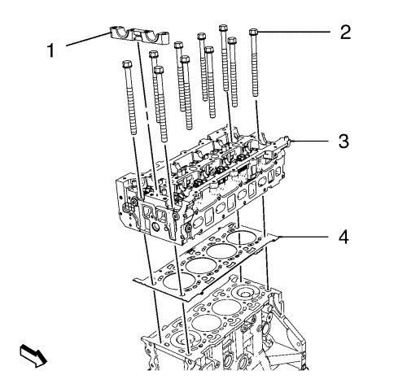
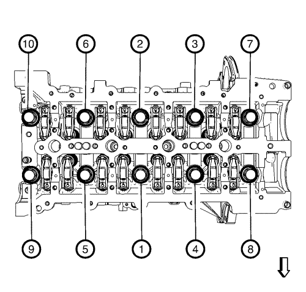

Sustitución de la culata
Herramientas especiales
| • | EN-50437 Indicador de altura - PMS del pistón |
| • | GE-571-B Galga de cuadrante |
Si desea informarse sobre herramientas regionales equivalentes, consultar Herramientas especiales .
Procedimiento de desmontaje
- Desmonte el árbol de levas de admisión. Consultar Sustitución del árbol de levas de admisión .

- Retire la guía de asentamiento del árbol de levas (1).

- Afloje los 10 tornillos de retención de la culata en el orden que se indica.
- Retire los 10 tornillos de retención de la culata (2).
- Retire la culata (3) y la junta (4).
Procedimiento de limpieza
Nota: Asegúrese de que las superficies de sellado de la culata y el bloque motor no tienen aceite, grasa o material de sellado viejo.
- Limpie las superficies de sellado.
- Compruebe si las superficies de sellado de la culata y el bloque motor están lisas.
- Limpie las superficies del pistón.
Seleccione la junta

- Alinee el PMS del pistón 1.
- Mida el grosor del saliente del pistón con el indicador de altura EN-50437.
- Repita el procedimiento de medición en los cilindros 2, 3 y 4, y calcule la media de los valores del saliente del pistón medidos.
- Seleccione la junta de la culata según las siguientes especificaciones. Consultar Especificaciones mecánicas del motor .
Procedimiento de montaje
- Limpie las superficies de sellado.
- Monte la culata (3) y una junta NUEVA (4).
Nota: No apriete los pernos.
- Monte 10 tornillos de retención de culata NUEVOS (2).
Precaución:Consulte Precaución con las fijaciones en la sección Prólogo.
- Apriete los tornillos de retención de la culata (2) en cuatro pasadas, en el orden que se indica en el gráfico anterior:
| • | Primera pasada a 30 N·m (22 lib. pie). |
| • | Segunda pasada a 100 N·m (74 lib. pie). |
| • | Tercera pasada a 90°. Utilice el goniómetro EN-470-B. |
| • | Cuarta pasada a 90°. Utilice el goniómetro EN-470-B. |
- Monte la guía de asentamiento del árbol de levas (1).
- Monte el árbol de levas de admisión. Consultar Sustitución del árbol de levas de admisión .
| © Copyright Chevrolet. All rights reserved |